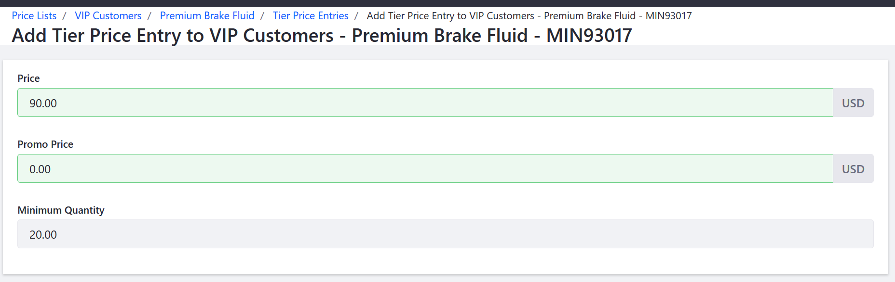

Adding Tiered Pricing¶
Tiered pricing allows store owners to vary the price of a product based on the quantity ordered. A store could offer reduced prices for higher quantities ordered. Prices that are set via Tiered Pricing will take precedence over prices set directly against a given SKU for the associated users if a buyer meets the minimum quantity specified. This article describes how to add tiered pricing to a price list.
To create a pricing tier for a product in a price list:
Navigate to the Control Panel → Commerce → Price Lists.
Click on a price list (VIP Customers in this example).
Click the Entries sub-tab.
Click on a product (Premium Brake Fluid in this example).
Click the Tier Price Entries sub-tab.
Click the (+) button.
Enter the following fields (example values shown below):
Price: 90
Promo Price: (leave it blank)
Minimum Quantity: 20 (This is the minimum quantity needed to receive the price for bulk quantity.)

Click Save.
A pricing tier ($90) has been created for orders that reach the minimum quantity (20) for the product (Premium Brake Fluid) on the price list (VIP Customers). Repeat the steps to add successive price tiers to the same product and price list (for other minimum quantities), or to add a price tier to another product and price list.
Additional Information¶
Note: Price Tier Entries can also be reached by directly viewing Product SKUs.